Latest Stories
Everything we have published, newest first. Opinion, recaps, history, and columns across every Bay Area team.

49ers Trade for Keenan Allen: A Sixth Round Pick to the Colts
The 49ers traded a 2027 sixth round pick to the Colts for six time Pro Bowl receiver Keenan Allen. A fan's take on the price, the fit and the injuries.
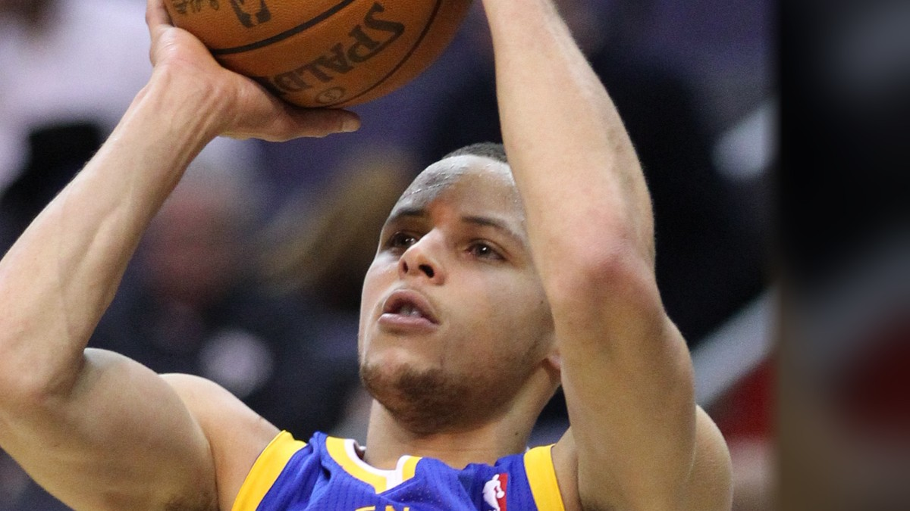
Steph Curry Drops 41 in Overtime, and the Warriors Have Won Seven Straight
Steph Curry scored 41 with a record 16th 40 point game since turning 35, and the Warriors beat Orlando 126 to 119 in overtime for their seventh straight win.

Niners vs. Raiders Is Back in the Bay, and It Still Means Something
The Raiders play their first regular season game in the Bay Area since moving to Las Vegas, against the 6 and 1 Niners at Levi's. Why this one still hits home.

49ers 38, Raiders 17: Five Takeaways, Six Receivers Missing
49ers 38, Raiders 17 at Levi's Stadium: five second half takeaways, a Jaden Dugger pick six, Purdy's 100th TD pass, and a win without six receivers.
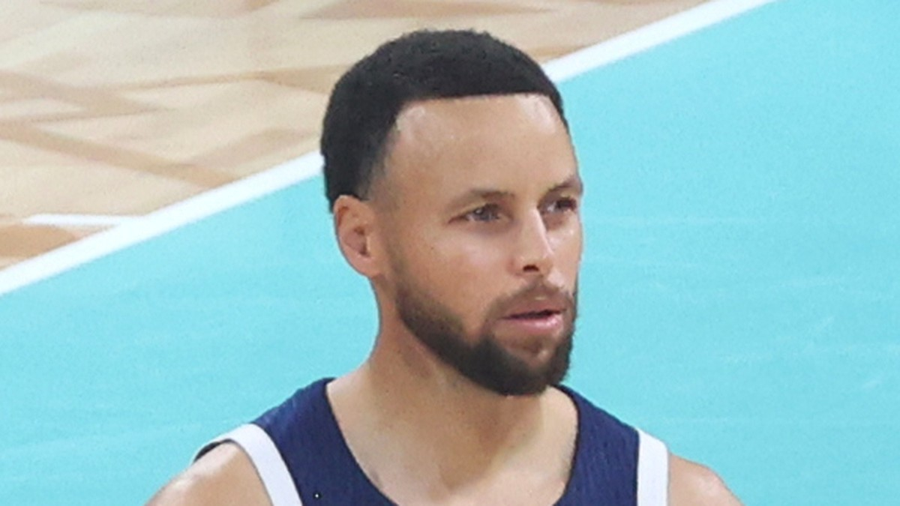
Warriors All Time Leaders: Points, Threes, Assists and More
Who leads the Warriors all time in points, threes, assists, rebounds, steals, blocks and games? Fan answers to every franchise record question, through 2026.
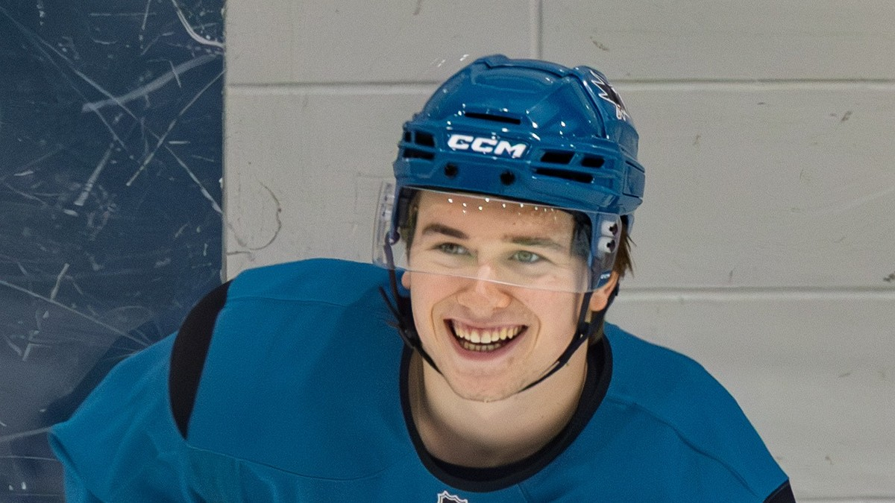
Sharks All Time Leaders: Marleau, Thornton and the Kid Coming for Them
The San Jose Sharks franchise records in goals, assists, points, games and wins, and why Macklin Celebrini has one fan doing math he should not be doing.
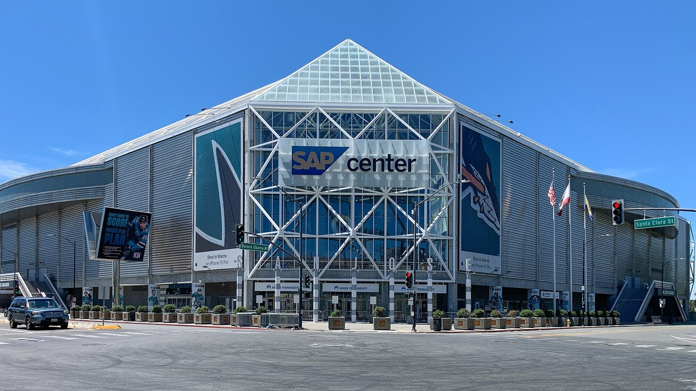
SAP Center Guide: Parking, Bag Policy, Doors and Getting There
Your Sharks game night at SAP Center, hour by hour: Diridon and transit, parking, door times, the bag policy and what you can bring into the Shark Tank.

Levi's Stadium Guide: Parking, Transit, Bag Policy and Tips
A fan's Levi's Stadium guide: parking passes, the clear bag policy, VTA, Caltrain and ACE routes, tailgating rules, and which side of the stadium to avoid.

Giants Dodgers Rivalry: Head to Head Record and Biggest Moments
The Giants and Dodgers are six wins apart after more than 2,600 games. The head to head record, 1951, 1982, 1993, 2021 and why a Giants fan never lets go.

Giants All Time Leaders: The Franchise Record Book
The Giants franchise records for home runs, hits, RBI, steals, wins, strikeouts and saves, from Mays and Mathewson to Robb Nen, with a fan walking the hall.
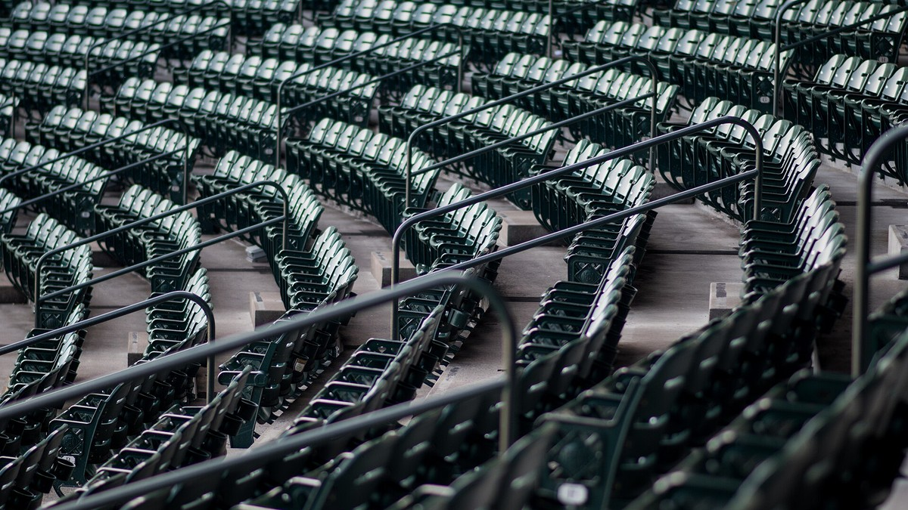
Bay Area Stadiums and Arenas, Ranked: Every Venue Guide
Every Bay Area stadium and arena ranked by a fan: Oracle Park, SAP Center, Chase Center, Levi's Stadium, Cal, Stanford and Sutter Health Park, plus the ghosts.
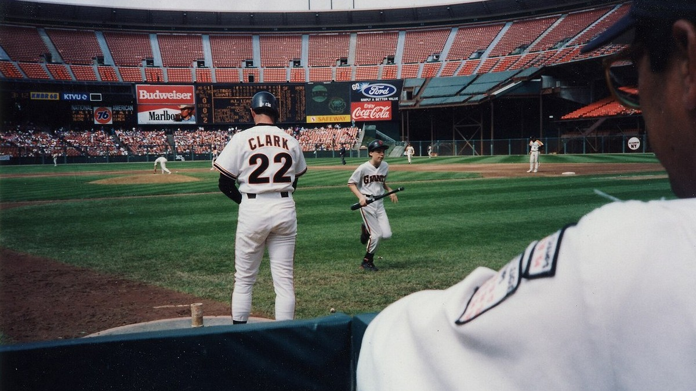
Bay Area Retired Numbers: Every Team, Every Jersey
Every retired number in the Bay Area: the 49ers, Giants, Warriors, Sharks and A's, who wore them, who should be next, and why the Raiders have none.
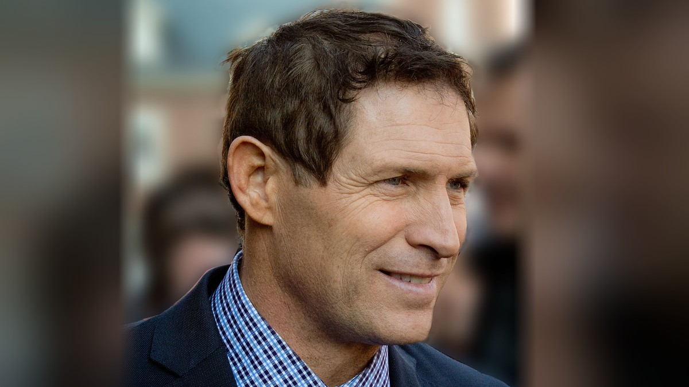
49ers Super Bowl History: Every Appearance and Playoff Run
How many Super Bowls have the 49ers won? Five in eight tries. Every 49ers Super Bowl, the NFC title games and the full playoff history through 2025.

Brandon Aiyuk Showed Up. He Still Won't Say He Wants to Be a 49er.
Brandon Aiyuk met the 49ers with Drew Rosenhaus, wants reinstatement and owes about $13 million in bonus money. A fan on how weird this has gotten.
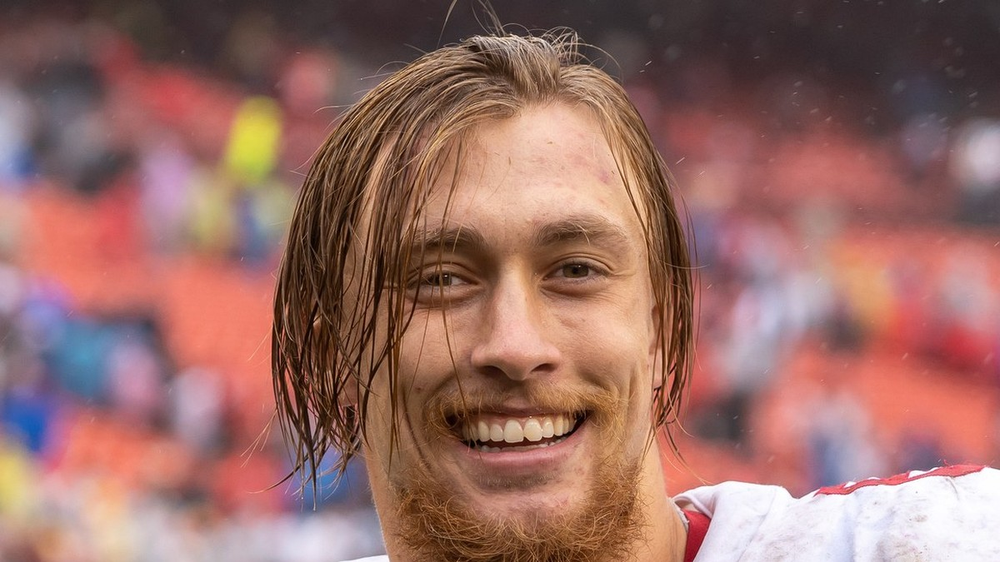
49ers All Time Leaders: Passing, Rushing, Receiving and More
The 49ers all time leaders in passing, rushing, receiving, sacks, interceptions and points, with Purdy, Kittle and Bosa chasing the record book right now.

Bay Area Sports Are Getting Good Again, and I Can't Stop Smiling
Bryce Eldridge, Yaxel Lendeborg, Brock Purdy, a pass rush that finally gets home and a hurt rookie I can't quit. Bay Area sports feel young and fun again.

The Warriors Stopped Paying Kristaps Porzingis, and I Think He's Done
Zero games this season, leaning toward retirement, and now the Warriors have stopped paying his $20 million salary. Fifteen games is all we ever got.

Five Straight, and I Owe the Warriors an Apology
Down 17 to Phoenix with Draymond ejected, the Warriors won 116 to 113 for five straight. Ten days ago they were 0 and 3 and I was done with them.

49ers Work Out Eight Defenders, and Five of Them Play Inside
The 49ers worked out eight free agent defenders on Tuesday, five of them defensive linemen. What the list says about the depth behind Buckner and Osa.
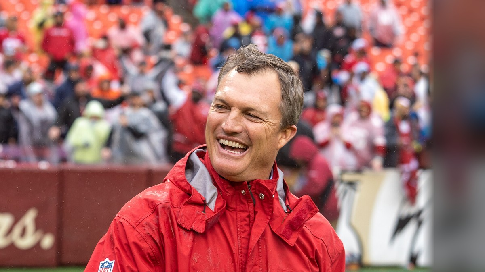
Mac Jones Trade Rumors: Hang Up the Phone, John
Mac Jones trade rumors are back with the deadline on November 10. The 49ers are 6 and 1, Purdy is healthy, and the best backup in football should stay put.

Yaxel Lendeborg Is the Truth, and Steph Knows It
Yaxel Lendeborg dropped 37 on the Clippers with Steph and Draymond sitting. Four straight wins, and Curry at 38 finally has a kid who can carry a night.
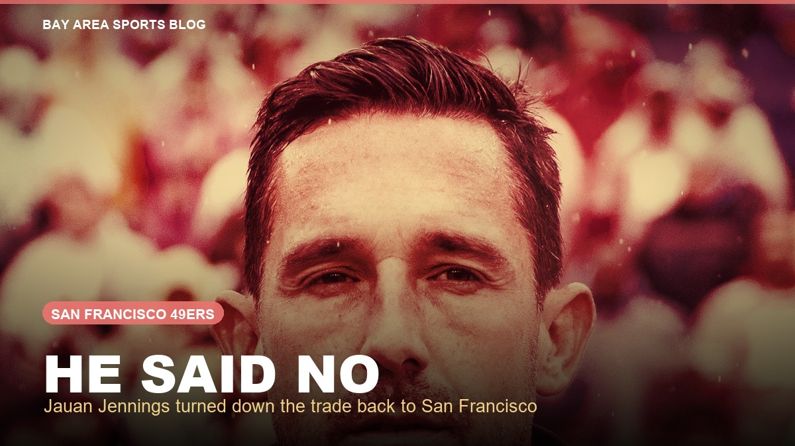
Jauan Jennings Said No to Coming Home. That One Stings.
The 49ers and Vikings had a Jauan Jennings trade lined up. All he had to do was tell Shanahan and Lynch he wanted back. He said he'd rather stay in Minnesota.

Steph Curry Is 38 and He Just Put Luka on the Floor
Down 25 to the Lakers, Steph Curry dropped Luka Doncic with a crossover, hit the three, and scored 31 in a 112 to 95 comeback. At 38 he's averaging 29.2 a night.
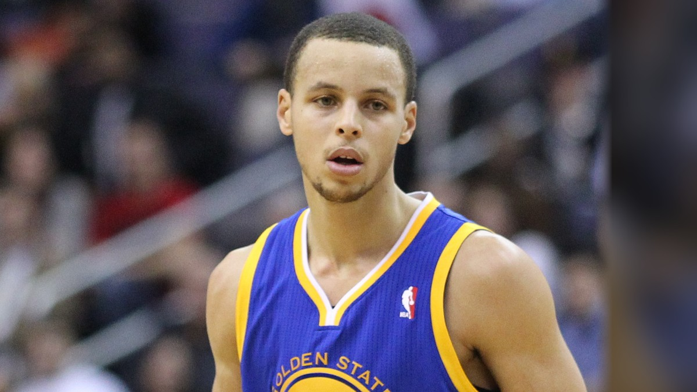
Yaxel Lendeborg Is My Rookie of the Year, and Ten Teams Should Be Sick
The Warriors took Yaxel Lendeborg 11th and ten teams passed. Five games in he's at 22.6 points and 9.2 rebounds, and he looks built to play next to Steph Curry.

Garrett Wilson to the 49ers? It's Just the Internet Talking.
The Garrett Wilson to San Francisco rumors are all noise so far. Buckner was probably the big move. Meanwhile Seattle went and got Quenton Nelson.
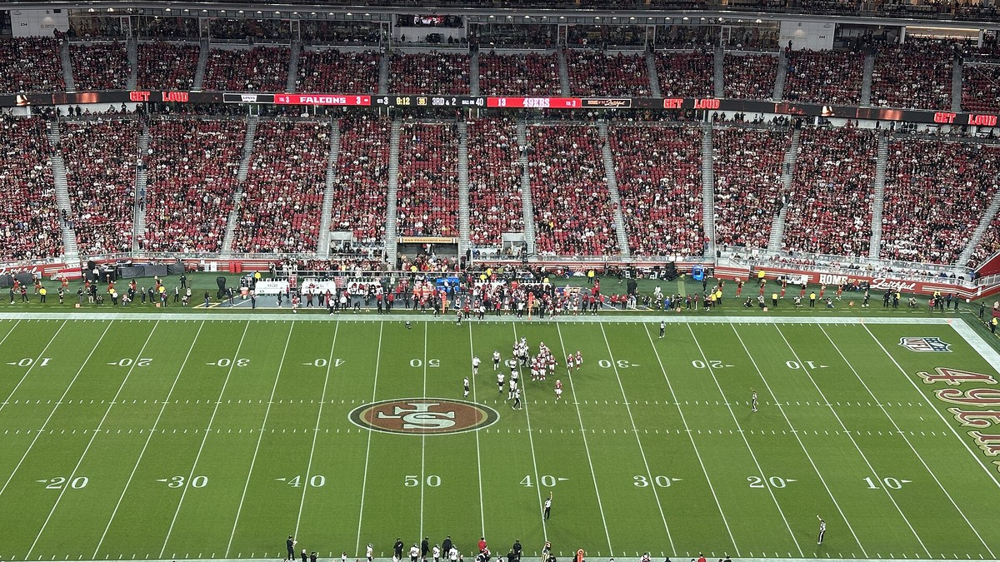
They Cut Jack Jones. DeForest Buckner Needed the Spot.
The 49ers released Jack Jones on Wednesday so DeForest Buckner has a roster spot. Seven games, a benching in Atlanta, and a corner room that just got thinner.
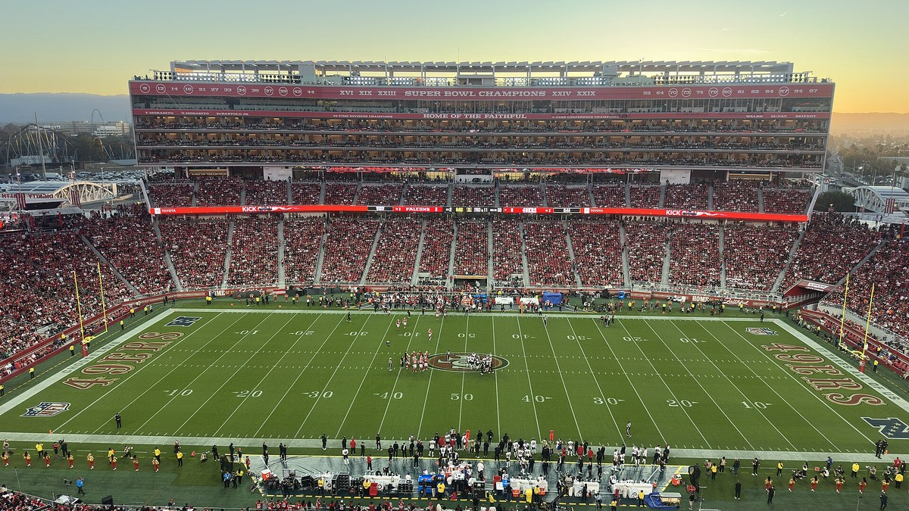
He's Home. DeForest Buckner Is a 49er Again, and the Front Just Changed.
The 49ers got DeForest Buckner back for a 2027 fourth. Four sacks, a bye week to install him, and the middle of this defensive line finally has a grown man.
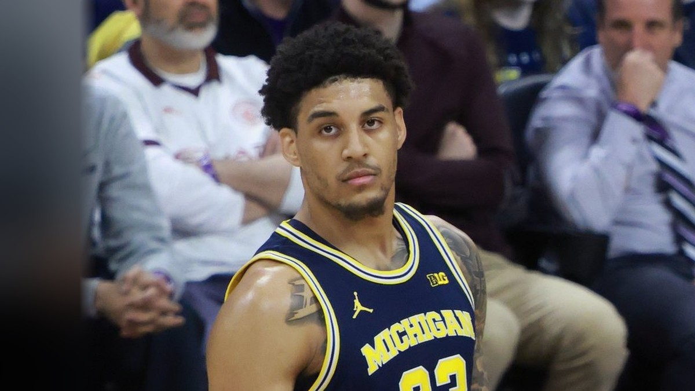
0-3, and Yaxel Lendeborg Is Why I'm Still Smiling
The Warriors are 0-3 after the Lakers, Grizzlies and Suns. Yaxel Lendeborg is at 18.7 points, 8.3 rebounds and 4.3 assists, and the young guys are why I'm still smiling.

Oh and Two, and This Is What the Warriors Front Office Bought
Three star chases, zero trades, and a roster pinned under the second apron. The oh and two start is the bill for a summer that wasted another Curry year.
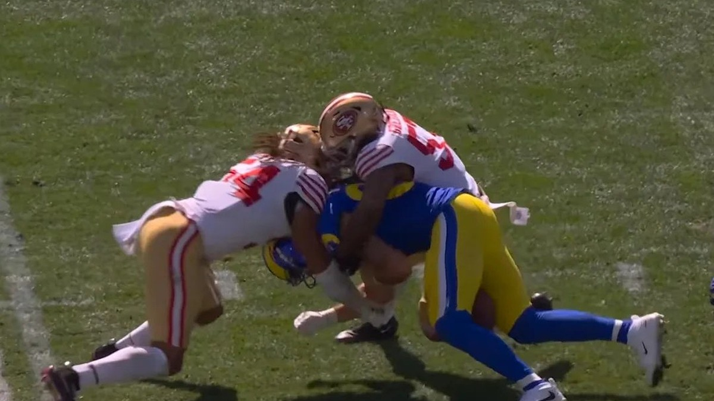
Malik Mustapha Is a Heat Seeking Missile. The League Should Learn His Name.
A fourth round pick from the Trey Lance trade, two ACL repairs, and back to back game saving plays. Malik Mustapha is the 49ers' poor man's Ronnie Lott.

Six and Oh, Barely. The '72 Dolphins Should Be Sweating.
The 49ers held off Washington 23 to 17 on Monday night to go 6 and 0. Purdy took the career passer rating crown, and the '72 Dolphins have company to worry about.
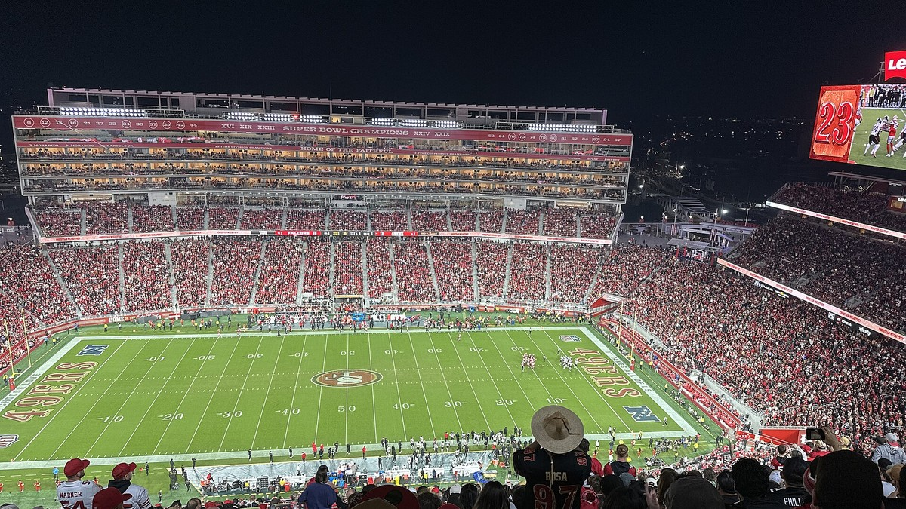
Bring DeForest Buckner Home. The 49ers Will Never Get a Better Shot.
The Colts fired their GM, Buckner is fed up at 2 and 4, and the 49ers have $41 million in cap space and a banged up defensive line. Go get Big Buck back.

Nick Bosa Is Out Monday Night. Juice and Evans Might Not Be.
The 49ers ruled Nick Bosa out for Monday night against Washington. Kyle Juszczyk has no tag, and Mike Evans is questionable with ribs and an Achilles.
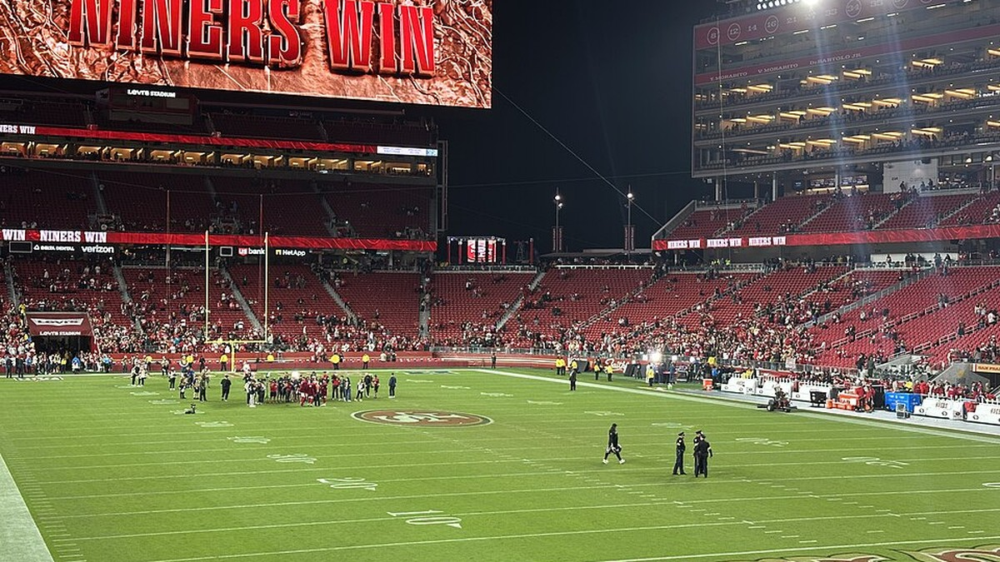
Christian Kirk Finally Practiced, and Mike Evans Didn't
Christian Kirk practiced for the first time since July. Mike Evans sat with two broken ribs and a sore Achilles. Monday night at Levi's is next.
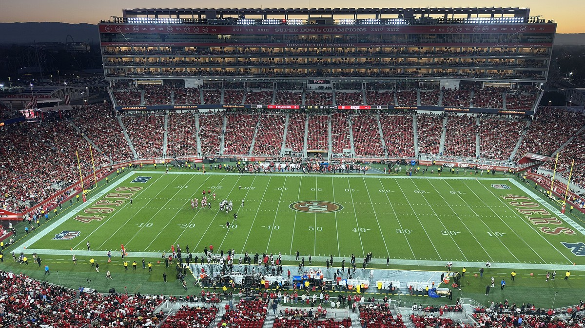
Jauan Jennings Trade Rumors: Bring Him Home, 49ers
Deebo's hamstring is gone, the receiver room is on IR, and Jauan Jennings has two catches in Minnesota. The 49ers trade rumors make too much sense to ignore.

Dre Greenlaw Suspended One Game for the Head Butt in Seattle
The NFL suspended Dre Greenlaw one game without pay for head butting Ernest Jones, so he misses Washington. A Niners fan on the appeal, Dugger and the pattern.

49ers 5 and 0 Through All the Injuries: Shanahan's Best Job Yet
Bosa out, the line gutted, the coach in a July car wreck, and the 49ers are 5 and 0. Only the 1999 Rams also beat three 12 win teams in a 5 and 0 start.
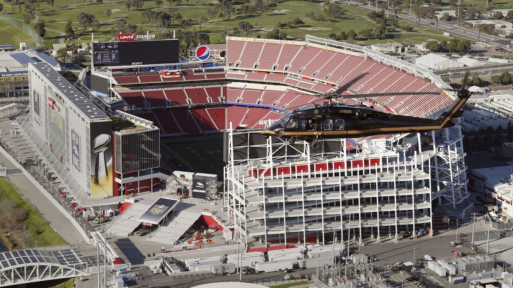
49ers Beat Seahawks 32 to 29 in Seattle and Go 5 and 0
Seven turnovers, a Greenlaw ejection, Deebo hurt and the 12th man screaming, and the 49ers still beat the champs 32 to 29 at Lumen Field. A Niners fan exhales.
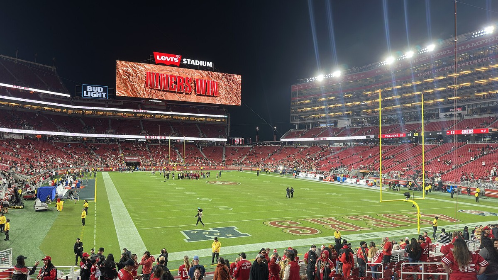
49ers vs Seahawks Preview: Win in Seattle and the NFC West Is Ours
49ers vs Seahawks Week 5 preview from a Niners fan: 4 and 0, Purdy still unsacked, Bosa out, Seattle favored by 3, and why a win at Lumen Field puts us in control.

49ers Cut Matt Judon and Activate Mykel Williams for Seattle
The 49ers released Matt Judon and activated Mykel Williams off PUP. Number 98 plays Sunday at Seattle, his first game since the ACL. A Niners fan on why it matters.